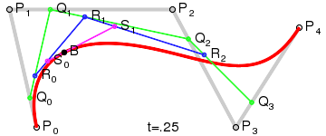

Bézier: Through Points
The Bézier: Through Points function allows the operator to create
fourth order Bézier curves by Selecting a set of control points.

Step by Step
|
Step 1 of 1:
Select a
spline or
Indicate to create the
spline
|
The initial step in the process is to define the Bézier curve through
the selection of up to six control points. Once all of the
points have been selected, you must Indicate to create the
curve.
NOTE: Once that Bézier curve has been created, you may right drag any of the control
points to deform the curve in real time.